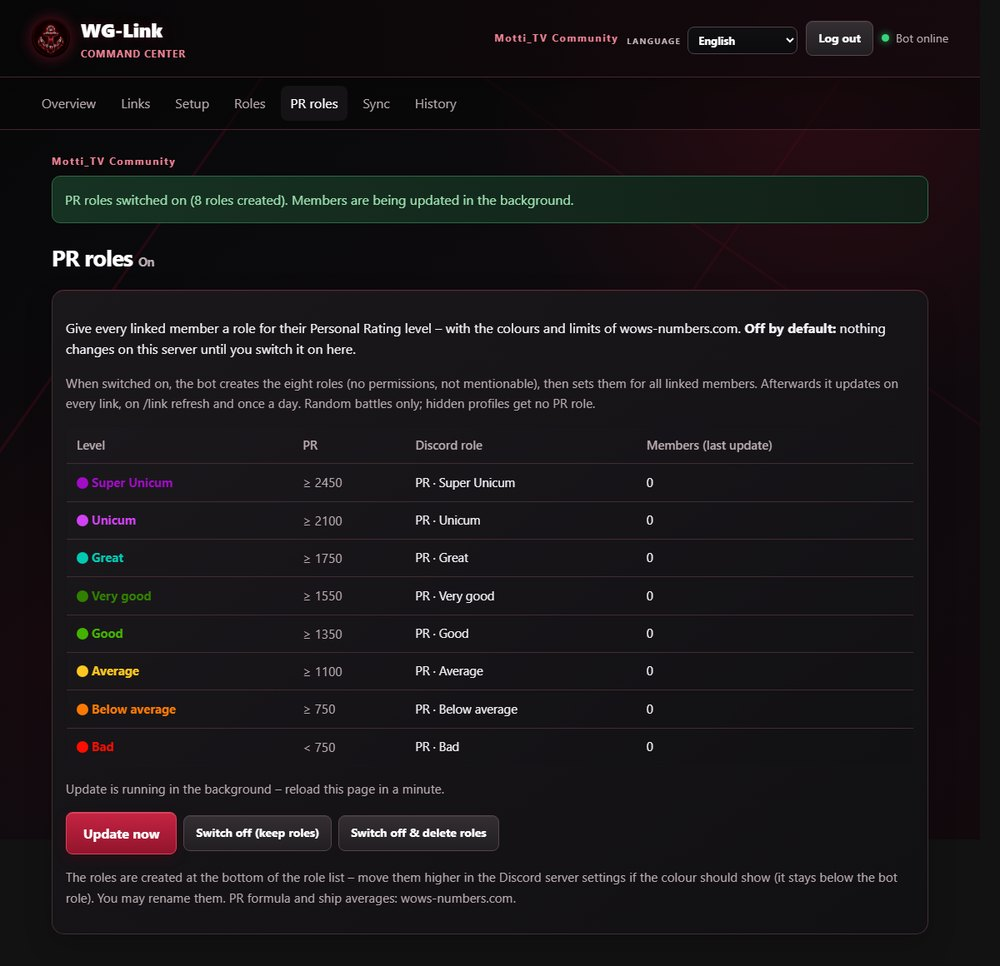
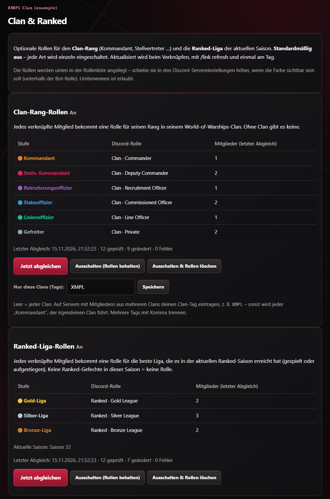
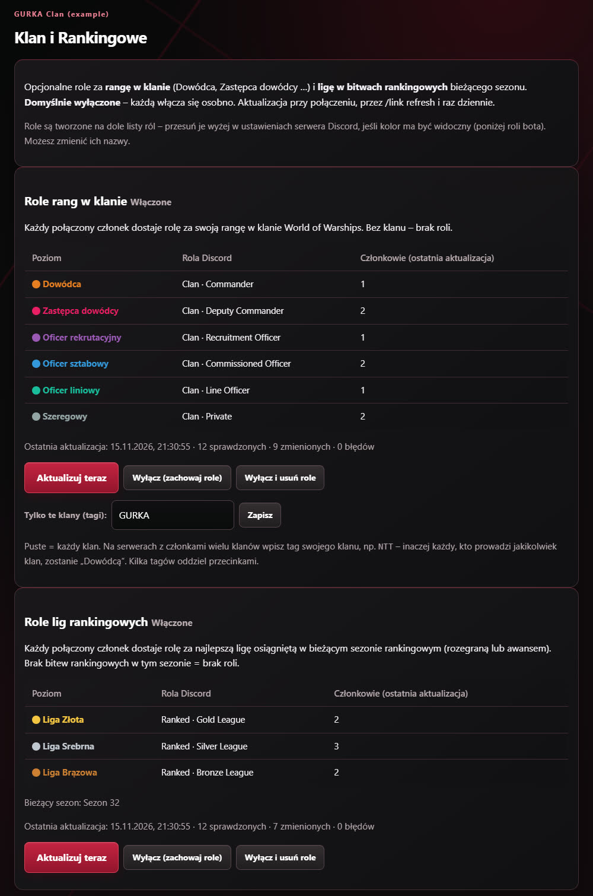
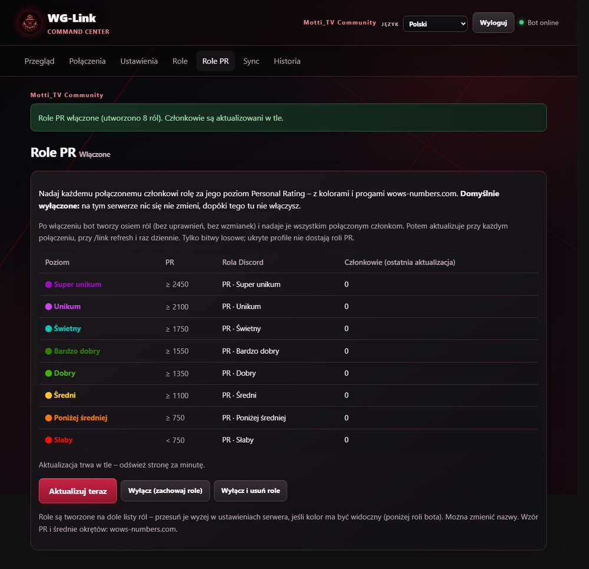

Know who is who on your World of Warships server.
WG-Link connects Discord members to their Wargaming account with the official login – and keeps nickname, clan tag, region and roles up to date automatically.
Ready in three steps
No config files, no hosting – invite the bot and you are done.
Invite WG-Link
Add the bot to your server and pick the verified role with /link-setup role.
Post the link panel
Run /link-panel in a #verify channel – members get one-click buttons for EU, NA and ASIA.
Members link themselves
They log in on the official Wargaming page. Nickname, clan tag, region and roles are set automatically.
Everything a WoWS clan server needs
All optional extras are off by default – nothing changes until an admin switches them on.
Account linking
Official Wargaming OpenID login – per server, one WG account per Discord account.
Nick, clan & region
The member list shows [CLAN] Name (EU) – choose your style, it stays current.
Verified role & welcome
Automatic role after linking, plus optional welcome and DM messages.
PR roles
A role per Personal Rating level in wows-numbers colours – limit it to your clan role if you like.
Clan rank & Ranked NEW
Mirror in-game clan ranks and the current Ranked league as Discord roles.
Web Command Center
Links, nick style, roles, sync and history in your browser – or with slash commands.
Manage your server in the browser
Sign in with Discord at wglink.mottitv.com/admin or open it with /admin – only admins with “Manage Server” get in.


Questions
Is WG-Link official?
No. WG-Link is an unofficial community bot and not affiliated with Wargaming. It only uses the official public login and API.
Does the bot see my password?
Never. You log in on Wargaming's own page; WG-Link only receives your public account ID and nickname.
Will it change anything on my server by itself?
Only what you set up: verified role and nickname. PR, clan rank and Ranked roles stay off until you switch them on.
Is it meant for community servers too?
Linking and nicknames work everywhere. PR roles are meant for clan servers – on mixed servers limit them to your clan role or clan tag.
Does it cost anything?
No – WG-Link is a free, private, non-commercial project.
Bring order to your clan server
Add WG-Link and let your members link in seconds.
Wisse, wer wer ist auf deinem World-of-Warships-Server.
WG-Link verknüpft Discord-Mitglieder über den offiziellen Login mit ihrem Wargaming-Konto – und hält Nickname, Clan-Tag, Region und Rollen automatisch aktuell.
In drei Schritten fertig
Keine Konfigurationsdateien, kein Hosting – Bot einladen, fertig.
WG-Link einladen
Füge den Bot deinem Server hinzu und wähle mit /link-setup role die Verifiziert-Rolle.
Link-Panel posten
Führe /link-panel in einem #verify-Kanal aus – Mitglieder bekommen Buttons für EU, NA und ASIA.
Mitglieder verknüpfen sich selbst
Sie melden sich auf der offiziellen Wargaming-Seite an. Nickname, Clan-Tag, Region und Rollen werden automatisch gesetzt.
Alles, was ein WoWS-Clan-Server braucht
Alle optionalen Extras sind standardmäßig aus – nichts ändert sich, bis ein Admin sie einschaltet.
Konten verknüpfen
Offizieller Wargaming-OpenID-Login – pro Server, ein WG-Konto pro Discord-Konto.
Nick, Clan & Region
Die Mitgliederliste zeigt [CLAN] Name (EU) – Stil wählbar, bleibt aktuell.
Verifiziert-Rolle & Willkommen
Automatische Rolle nach dem Verknüpfen, dazu optionale Willkommens- und DM-Nachrichten.
PR-Rollen
Eine Rolle pro Personal-Rating-Stufe in wows-numbers-Farben – auf Wunsch nur für deine Clan-Rolle.
Clan-Rang & Ranked NEU
Clan-Ränge aus dem Spiel und die aktuelle Ranked-Liga als Discord-Rollen.
Web-Command-Center
Verknüpfungen, Nick-Stil, Rollen, Abgleich und Verlauf im Browser – oder per Slash-Befehl.
Verwalte deinen Server im Browser
Mit Discord anmelden unter wglink.mottitv.com/admin oder mit /admin öffnen – nur Admins mit „Server verwalten“ kommen rein.


Fragen
Ist WG-Link offiziell?
Nein. WG-Link ist ein inoffizieller Community-Bot und gehört nicht zu Wargaming. Er nutzt nur den offiziellen öffentlichen Login und die API.
Sieht der Bot mein Passwort?
Nie. Du meldest dich auf der Seite von Wargaming an; WG-Link bekommt nur deine öffentliche Konto-ID und deinen Nickname.
Ändert er von selbst etwas auf meinem Server?
Nur, was du einrichtest: Verifiziert-Rolle und Nickname. PR-, Clan-Rang- und Ranked-Rollen bleiben aus, bis du sie einschaltest.
Ist er auch für Community-Server gedacht?
Verknüpfen und Nicknames funktionieren überall. PR-Rollen sind für Clan-Server gedacht – auf gemischten Servern auf Clan-Rolle oder Clan-Tag begrenzen.
Kostet das etwas?
Nein – WG-Link ist ein kostenloses, privates, nicht-kommerzielles Projekt.
Bring Ordnung auf deinen Clan-Server
Füge WG-Link hinzu und lass deine Mitglieder sich in Sekunden verknüpfen.
Wiedz, kto jest kim na twoim serwerze World of Warships.
WG-Link łączy członków Discorda z ich kontem Wargaming przez oficjalne logowanie – i automatycznie aktualizuje nick, tag klanu, region i role.
Gotowe w trzech krokach
Bez plików konfiguracyjnych, bez hostingu – zaproś bota i gotowe.
Zaproś WG-Link
Dodaj bota do serwera i wybierz rolę weryfikacji komendą /link-setup role.
Opublikuj panel
Uruchom /link-panel na kanale #verify – członkowie dostaną przyciski EU, NA i ASIA.
Członkowie łączą się sami
Logują się na oficjalnej stronie Wargaming. Nick, tag klanu, region i role ustawiają się automatycznie.
Wszystko, czego potrzebuje serwer klanu WoWS
Wszystkie opcjonalne dodatki są domyślnie wyłączone – nic się nie zmienia, dopóki admin ich nie włączy.
Łączenie kont
Oficjalne logowanie OpenID Wargaming – na każdym serwerze, jedno konto WG na konto Discord.
Nick, klan i region
Lista członków pokazuje [CLAN] Name (EU) – styl do wyboru, zawsze aktualny.
Rola weryfikacji i powitanie
Automatyczna rola po połączeniu oraz opcjonalne wiadomości powitalne i DM.
Role PR
Rola za poziom Personal Rating w kolorach wows-numbers – opcjonalnie tylko dla roli klanu.
Ranga w klanie i rankingowe NOWE
Rangi klanowe z gry i bieżąca liga rankingowa jako role Discord.
Command Center w przeglądarce
Połączenia, styl nicku, role, synchronizacja i historia w przeglądarce – albo komendami.
Zarządzaj serwerem w przeglądarce
Zaloguj się przez Discord na wglink.mottitv.com/admin albo otwórz komendą /admin – wejdą tylko admini z uprawnieniem „Zarządzanie serwerem”.


Pytania
Czy WG-Link jest oficjalny?
Nie. WG-Link to nieoficjalny bot społeczności, niezwiązany z Wargaming. Korzysta tylko z oficjalnego publicznego logowania i API.
Czy bot widzi moje hasło?
Nigdy. Logujesz się na stronie Wargaming; WG-Link dostaje tylko publiczne ID konta i nick.
Czy sam coś zmieni na moim serwerze?
Tylko to, co ustawisz: rolę weryfikacji i nick. Role PR, rangi w klanie i rankingowe są wyłączone, dopóki ich nie włączysz.
Czy nadaje się też na serwery społeczności?
Łączenie i nicki działają wszędzie. Role PR są dla serwerów klanów – na mieszanych serwerach ogranicz je do roli lub tagu klanu.
Czy to coś kosztuje?
Nie – WG-Link to darmowy, prywatny, niekomercyjny projekt.
Zaprowadź porządek na serwerze klanu
Dodaj WG-Link, a członkowie połączą się w kilka sekund.